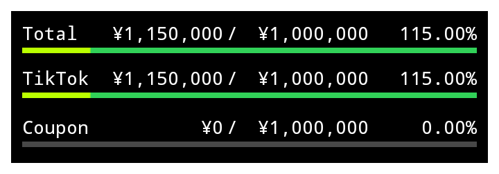
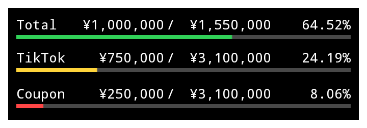
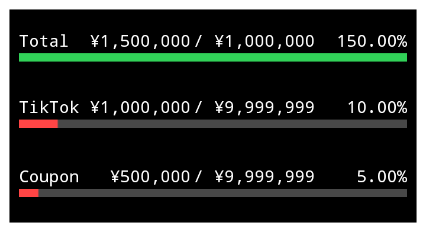
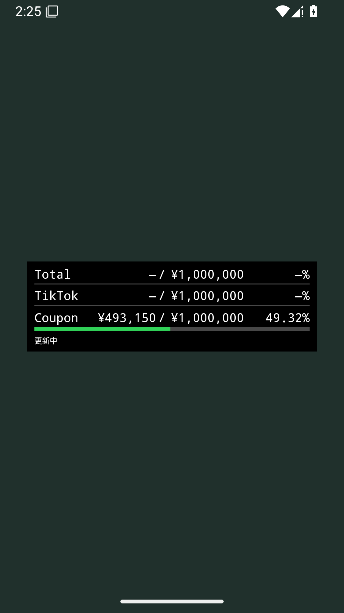

収益を、
ホーム画面に。
Total・TikTok・Couponを縦3行で表示。標準テキスト部品で、現在額・「／」・目標額を独立した固定幅に表示。画像縮小による文字の縮みを防ぎ、足りない桁は空白の幅を保ちます。カード・3行・ゲージの太さはサイズ変更に追従。枠線はありません。文字は欄に収まる範囲で拡大し、更新日時は表示しません。表示は0.1.4の配置を維持し、今日までの目標に対する進歩でゲージ色が緑・黄・赤へ変わります。v0.1.11では達成・未達・不足・2周目の4色を、色見本またはカラーコードで変更できます。月間目標を超えると1周目の達成色を満タンに保ち、その上に2周目の黄緑ゲージ（既定色 #BAFF00）を重ねます。115%なら「115.00%」を維持し、黄緑を15%重ねます。100%ちょうどは達成色で満タン、200%ちょうどは2周目の色で満タンです。前面の更新フロートは引き続き非表示です。タップすると設定画面と同じ方法で取得を始め、ウィジェット内だけに小さく「更新中」を表示します。

Android 35の2周目表示テストです。数値は検証用で、実収益ではありません。

Android 35で描画したテスト画像です。数値は表示検証用で、実収益ではありません。
高さを広げたときの表示

同じ横幅で高さを変更したAndroid表示テスト。文字は固定欄に収まる上限で止まり、行間とゲージの太さは枠の高さに合わせて変わります。ゲージ内の目標額表示は外し、0.1.4の太さへ戻しています。
フロートのないタップ更新

Android 35の検証画面です。更新中もホームの操作を妨げない構成です。検証用の未連携状態を含みます。
Couponは既存の中央台帳から自動取得します。TikTokと目標は、THE FOOL QUESTから一度連携してください。サイトで値を変更したら再連携が必要です。
インストールして配置
- AndroidでAPKをダウンロードして開きます。必要な場合は、そのブラウザの「不明なアプリのインストール」を許可します。
- 「FOOL QUEST ウィジェット」を開き、「THE FOOL QUESTから連携」を選びます。普段使うサイトと同じブラウザで開き、表示値を確認して「アプリへ連携」を押します。
- アプリ側で値を確認して「受け取る」を押します。背景・文字などを調整し、「設定を保存」を押します。
- 「ホーム画面に追加」を押します。対応していない場合は、ホーム画面を長押しして「ウィジェット」から選びます。
連携画面が開いたら、サイトのTikTok金額・目標との一致を確認してください。未連携の項目は「—」になります。
毎日の操作
| タップ | Coupon取得を開始し、ウィジェット内だけに「更新中」を表示。前面フロートはありません。通信中の連続操作は同じ取得の完了を待ちます。 |
| 自動更新 | 30分間隔。省電力中は遅れる場合があります。 |
| 長押し | サイズ変更。カード背景と3行の配置、ゲージの太さが枠の高さに合わせて変わります。文字は固定欄に収まる上限まで拡大します。設定メニューの有無はホームアプリによります。 |
| 表示設定 | 黒／白、色、透過率、文字サイズ、四方向余白、行間、ゲージの基準太さと色。 |
| 進歩カラー | 今日までの目標に対して100%以上＝達成色（既定：緑）、50%以上100%未満＝未達色（黄）、50%未満＝不足色（赤）。達成・未達・不足・2周目の4色はそれぞれ変更できます。目標は月間目標×日本時間の日付÷当月の日数。収益・目標不明や古い月は灰色。ゲージの長さと％は月間達成率です。表示設定でOFFにすると保存済みの固定色を使用します。 |
| 通信失敗 | 前回の正常取得値を保持。時間切れ・未接続・サーバー応答などの理由を表示します。アプリの設定画面では復旧後も直近の失敗理由を確認できます。 |
確認状況
計算・配置229件、HTTP通信28件、読み取り連携7件に合格。最新版ソースをAndroid 35で2162件、通信断12件、再起動2件で検証しました。正式署名のv0.1.10からv0.1.11への上書き更新では、同一UIDと保存済み設定・収益キャッシュ・通信履歴25項目の保持を確認。設定保存後も既存値を保持し、4色の既定値を追加することを確認しました。ユーザーのNova実機での新版・画面OFF時の定期更新・省電力条件は未確認です。
APKの照合情報
SHA-256
31174acf7025d3ea5f7907bc652e2b4b86e0b8ef2a839797f785d459debf9450
署名証明書 SHA-256
18946d320bb61c58aa627abbf2b53ea521b273b218eaec57f7fbc662f375bdb1